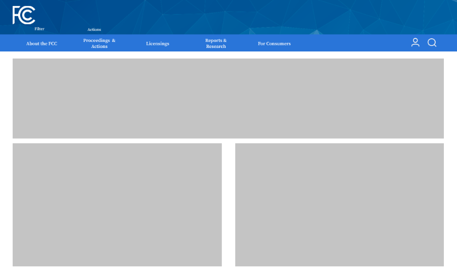
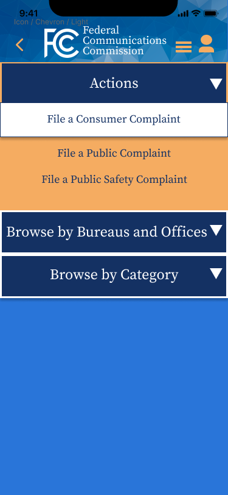
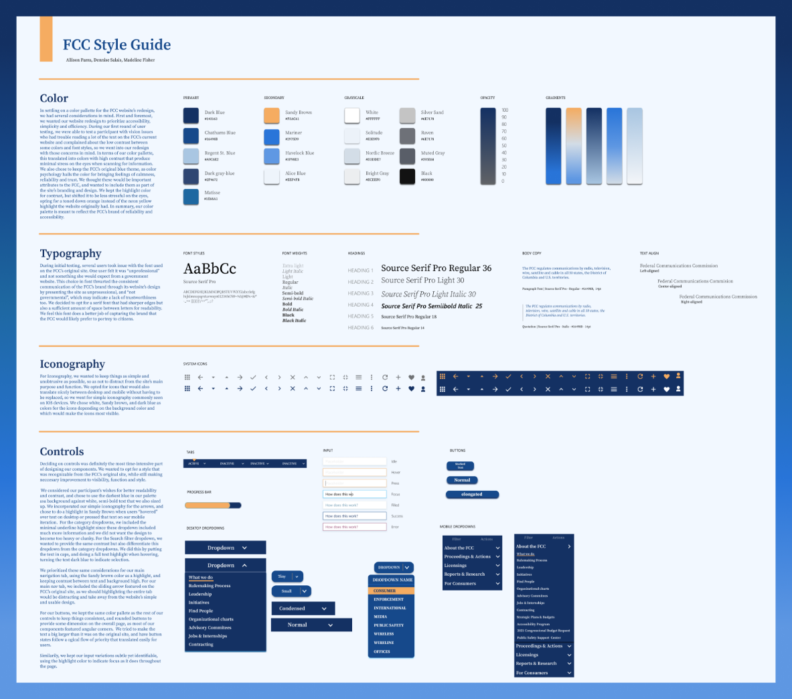

FCC Government Redesign
Challenged to create a Responsive Web Design
by redesigning a selected government agency
website for mobile and desktop platforms.
Duration:
3 Weeks
Role and Team Size
Role: User Interface Designer, Team size 3
Teammates: Dennise Salais, Allison Para
Key Skills
Information Architecture, Card Sorting,
Site Mapping, Heuristic Analysis,
Annotations and Redlining, Accessible Design,
Screen Reader Testing, Color Testing, Usability
Testing, Style Tile Creation, UI Component
Creation, Prototyping, Responsive Web Design,
Teamwork, Communication
Overview
Problem
Users struggle to navigate the FCC's website due to its poor organization of
information and lack of clarity in purpose.
Solution
Creating a more scannable and versatile interface for users that can be
navigated with ease which will allow users to better understand the purpose
of the commission’s website.
Target
Our target users, are active civilians who need to report important situations
regarding, communications like radio, television, and accessibility to the FCC via
their website.
Card Sorting
Once we had an idea of what made the website hard to navigate and understand we started
thinking of ways to reorganize the navigation through individual card sorts. As a team we
thought it would be best to do individual card sorts first so that we could see where everyone
thought the information should go.
Site Map
We came together as a team to make a site map after our card sorts were complete. We
wanted to do the individual sorts so we could find patterns from items we organized the same
way and find items that we organized in different ways. For the items we organized differently
we would come together and hear why each person placed it in the spot they did and then we
would make a decision as a team onwhere the item would be placed in the sitemap.
Site Map
The last thing we did before developing wireframes was creating a style tile. We wanted to
make sure we were all on the same page when it came to design elements such as fonts
and color palettes.
Site Map
The way this project was structured was interesting because we as a team only worked together for
the Research, Definition and Ideation phases. Once we hit prototyping we were tasked to do a lot of
the redesign on our own. For the Wireframing and prototyping we each came up with our own designs
and then would slowly start coming together. Below are the wireframes we each came up with.
My Wireframes
The goal for me was to get the layout tested. I wanted to see if this layout was easy for users
to scan and I wanted to see if our new navigation developed in our site maps made sense to users.
I tested the wireframes after making them into a clickable prototype. Users main complaints
since it was so low fi was having trouble with how little functionality there was on both mobile and
desktop prototypes. There were some things people struggled to find so I kept that in mind when iterating.
Allison's Wireframes
These are Allison's low fidelity wireframes. Hers are different in appearance from mine as well as
Dennise's because we had developed a very loose style tile. We wanted to let everyone have creative
freedom for the design choices they were making this early on.

Dennise's Wireframes
Dennise went away with the orange yellow color initially. she kept everything
super simple and iterated her work before she decided to move on to user tests.
Mid-Fidelity Prototyping

Dennise's Wireframes
For the home screen on the desktop I wanted to try and use a color slightly less
dull than the orage that you can see in the mobile prototype on the left. I thought
the color would make the site a little more vibrant while also drawing users attention
to the sections on the home screen with the color highlight at the top of each square. Through
testing the site again people found it easier to use and navigate and I think that is partly due to
the fact that there was more information present on the home page.
Dennise's Wireframes
For Allison's iteration there was a lot of changes in color and style. She also iterated by adding
information in her wireframes that looks very close to what the final product of a website would
look like. Like the low fidelity prototypes we were still not working together on the page layouts
and designs.
Dennise's Wireframes
Dennise went with a very simple design approach for her iterations attempting to
keep the information to a minimum so the users would not get overwhelmed with
what the site had to offer. The feedback she received was mostly about style in terms
of what colors liked and didn't like. People felt as though the information was organized
and that the navigation was easy to use.
High Fidelity Mockups
During this phase we came back together as a team to do the final iterations for this project.
Because we had designed a lot of things on our own it was somewhat of a challenge trying
to take the best pieces of every design into one cohesive design. This took a lot of communication
about both feedback we've received from testing as well as feedback we received from each other.

Final Style Guide
This process took a lot of collaboration on what parts of the designs were working well
and which items were not across our three designs. We got a lot more specific with what
items we were going to use since we had come to a consensus about which direction we wanted
to take the design in terms of components, colors and fonts. Doing this before creating the high fidelity
prototypes made it much easier for us to build the wireframes since we were all on the same page.
Usability Testing
After creating the first set of high fidelity wireframes we tested them one last time to so we
could make any final changes before our deadline. Some key feedback we received was there were
a few glitches in the prototype with user clicking items and things not working or having to reload
the page entirely that we were unaware of. The good thing was that people didn't really seem to struggle
with navigating due to design purposes. This was because of prototyping mishaps.
Mobile Mockups
These are the final Mockups for our project. There is a search bar that makes it easy for users to find
items they need to access quickly. The mobile navigation page features a series of drop down
menus that make it easy for users to find what they are looking for. The designs are responsive
to the users input as well.
Desktop Prototypes
The Desktop design has a home page with organized information in a minimalist style so users
do not feel overwhelmed by all the information this site holds. The designs are Responsive to the
users input and there is a search bar to access information quickly when needed.
Final Thoughts and Conclusion
Lessons Learned
Information architecture can make or break a site. Communication is very important
when working on a project in a team. When coming together for the final design it was
important for us to respect each other's work while also being able to critique each other
for the purpose of coming up with the best design.
Do Better
I really wish we wouldn't have spent so much time designing on our own. It made it
harder to come together in the end since we each had a vision on what the design
should be. We did a good job coming together in the end but I think collaborating sooner
could of done us good.
Key Takeaways
Colors make a difference in the usability and accessibility of a website. It is important
to design with accessibility in mind so you can make sure to make sites usable for
everyone. Information architecture is important to ensure that users can find what they
are looking for with ease. Using lingo in a site can frustrate users who are not very
familiar with what the site is about.